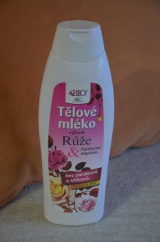
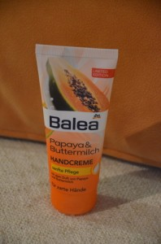

Jak můžete vidět nÞe, tento měsÃc jsem jela na low-costové a Äeské kosmetice 😉
Tělové mléko Růže, Bione
Pokud toužÃte vonět jako koš Äerstvě vypraného prádla, pořiÄte si tohle tělové mléko. Dlouho jsem přemýšlela, k Äemu bych tu krásnou Äistou parfemaci přirovnala a tohle mi přišlo jako nejvýstižnějÅ¡Ã pÅ™Ãměr. Mléko má spÃÅ¡ tekutějÅ¡Ã konzistenci, takže se velice dobře roztÃrá a rychle vsakuje. Neobsahuje parabeny ani silikony a celkově je složenà velmi sympatické. Na zimu bych snesla možná trochu lepÅ¡Ã hydrataci, ale to je jen maliÄká piha na kráse. Bohužel se jedná pouze o limitovanou edici a tak mám obavy, jestli ho ještě někde seženu 

OsvěžujÃcà pleťová voda, Rival de Loop
Tuto pleťovku jsem si koupila do KM. S low-costovou znaÄkou Rival de Loop mám vÃceméně dobré zkušenosti – za ty penÃze odvádà kvalitnà práci, pleť nijak nepodráždà a má celkem pÅ™Ãjemnou parfemaci. Tento kousek je urÄený pro normálnà a smÃÅ¡enou pleť. Mě tedy dost vysušuje, protože obsahuje alkohol, ale to je asi jediná větÅ¡Ã vada tohoto výrobku. Neobsahuje silikony ani parabeny a vůbec je složenà docela sympaticky struÄné. Najdete v něm také extrakt z ginkga a okurky, který pleťovce dodává opravdu osvěžujÃcà vůni (pokud si odmyslÃte ten alkohol :D). Pleťovou vodu z růžové řady pro citlivou pleť mám sice radši, ale tato na obÄasné odlÃÄenà také dobře posloužÃ.

ZpevňujÃcà lifting krém, Astrid
Kosmetika Astrid je celkem low-costová záležitost, která nijak neurazÃ, ale ani nenadchne. Na druhou stranu je dobré podpořit taky obÄas Äeskou kosmetickou výrobu – a Astrid je znaÄka s opravdu dlouholetou tradicÃ, jejÞ historie sahá až do roku 1847. Ve struÄnosti něco málo k výrobku: krém má takovou tu klasickou vůni oldschoolové kosmetiky a koneckonců i ty obaly vypadajà pořád tak trochu retro. Čekala jsem hutnějÅ¡Ã výrobek, ale konzistence krému je lehouÄká. I přesto je hodně mastný a vyživujÃcà a v tom možná tkvà kámen úrazu. Pleť po něm zůstává sice hydratovaná, ale zároveň i taková „mokrá“. Prostě se do pleti špatně vsakuje. Vzhledem k tomu, že od té doby, co ho použÃvám, obliÄej se mi vÃce mastÃ, podezÅ™Ãvám ho z toho, že mi pleť ucpává. Po zběžném pohledu na složenà hned uvidÃte, že se nejedná o moc pÅ™Ãrodnà záležitost, přestože krém by měl obsahovat komplex pÅ™ÃrodnÃch látek z listů olivovnÃku a olivového oleje, vitamÃn E, beta karoten a D – panthenol. Z pozitiv bych vyzdvihla urÄitě OF 10 UVA a UVB. Krém se dá použÃt na den i na noc. Výrobce dále slibuje vyhlazenà drobných linek a zredukovánà vrásek, což bych brala opravdu s rezervou – liftingové krémy si představuju trochu jinak :D. Osobně tedy spÃÅ¡ nedoporuÄuju – v této cenové kategorii urÄitě seženete mnohem lepÅ¡Ã pleťové krémy.

Krém na ruce s vůnà papáji a podmáslÃ, Balea
Trochu obskurnà kombinace v názvu tohoto krému na ruce ještě nenà důvod k obavám :D. Vonà sladce po ovoci, ruce hezky zjemnà a nenà ani moc lepkavý. SloženÃm je to spÃÅ¡e chemie, ale na obÄasné použÃvánà u dřezu docela dobrý pomocnÃk.



{kind=link}
{kind=link}
{kind=link}
{kind=link}
{kind=link}